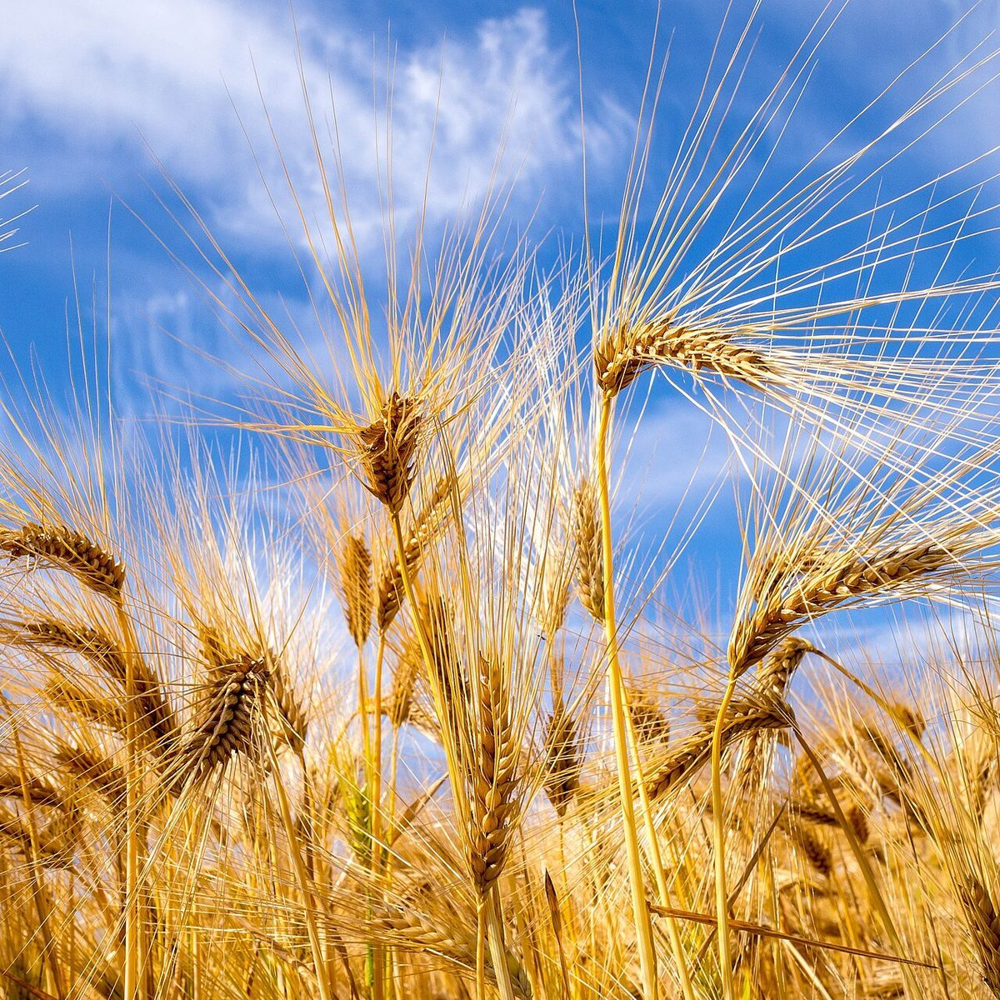

店のこと
店のこと
お店について確認できているのは、所在地・電話番号・Instagramのアカウントです。
このページの「想像してみる」部分は、制作側が想像して書いたものです。お店の実際の姿・考え・商品とは関係がありません。
確認できていること
- 店名は「a Bakery Olive」、業種はパン屋
- 所在地は青森県三沢市前平3丁目5-13(〒033-0143)
- 電話番号は090-2887-5655
- 営業時間・定休日・メニュー・価格・ご予約・駐車場は準備中

想像してみる
「Olive」という名前から
由来は分かりません。制作側は、オリーブの実が緑から黒へゆっくり色づくように、お店も少しずつ色を深めていくのかもしれない、と想像しました。実際のお店の姿ではなく、このサイトの配色のための連想です。

